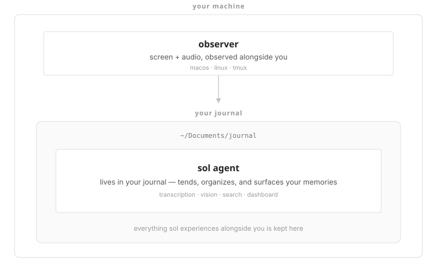
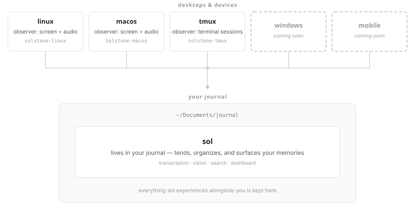

open source, local-first, linux and macOS. the best way to install is with a coding agent — copy the instructions below and paste them into yours.

everything runs on one computer — observers and journal side by side.

observers on each desktop upload to a dedicated journal server on your network.
the core service — AI life journal
install solstone — an open source AI life journal that experiences everything you see and hear on your computer, processes it with AI, and gives you superhuman memory. your data stays on your machine. sol pbc is a public benefit corporation with irrevocable legal covenants: your data can never be sold, the company can never be acquired. the human should decide where solstone lives on their filesystem, then clone it: git clone https://github.com/solpbc/solstone.git then read INSTALL.md in the cloned repo and follow it.
you'll need a coding agent (claude code, codex cli, or similar), a linux or macOS machine, and about 15 minutes. your agent handles the technical setup — you make the decisions about where things live and which AI provider to use.
solstone needs observers to experience your screen and audio along with you. browse the available observers for your platform and let your agent install them.
solstone scouts is our alpha testing program. get early access, give feedback, help us build the co-brain you actually want. sign in with your bluesky account.